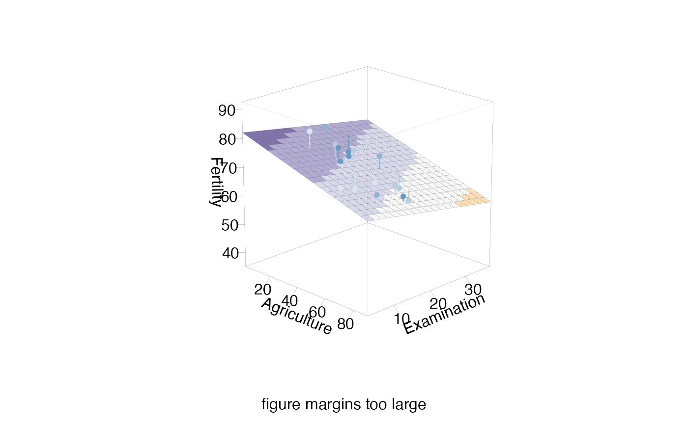
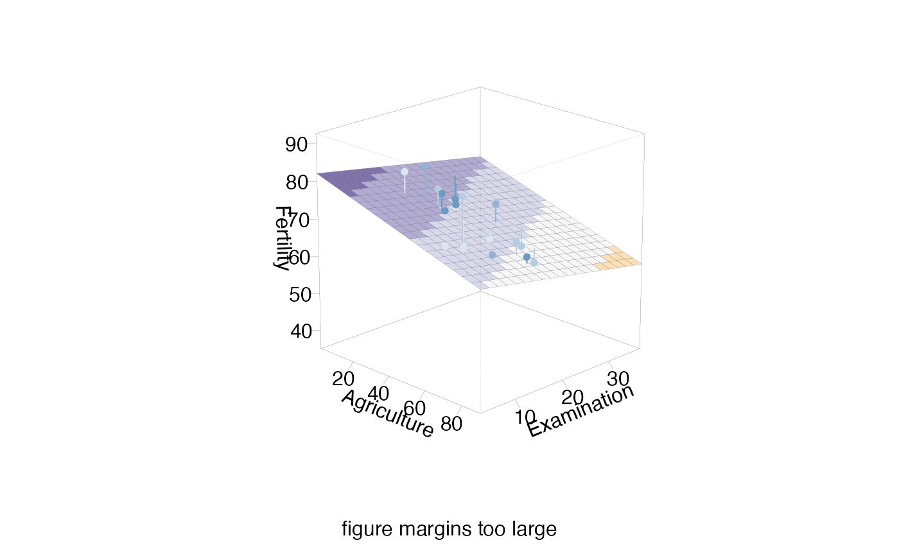

The section plot relates a fit or fits to one or two predictors (sectionvar),
for fixed values of other predictors in conditionvals.
sectionPlot(
CVdata,
CVfit = NULL,
response = NULL,
preds,
sectionvar,
conditionvals,
pointColor = "steelblue",
sim = NULL,
threshold = 1,
linecols = NULL,
dataplot = "pcp",
gridsize = 50,
probs = FALSE,
view3d = FALSE,
theta3d = 45,
phi3d = 20,
xlim = NULL,
ylim = NULL,
zlim = NULL,
pointSize = 1.5,
predictArgs = NULL,
resetpar = TRUE,
density = FALSE,
showdata = density == FALSE,
returnInfo = FALSE,
pointColorFromResponse = FALSE,
pcolInfo = NULL
)Arguments
- CVdata
the dataset used for the fit
- CVfit
a fit or list of fits
- response
name of response variable
- preds
names of predictors
- sectionvar
section variable, or variables.
- conditionvals
conditioning values. A vector/list or dataframe with one row
- pointColor
a color, vector of colors,or the name of variable to be used for coloring
- sim
vector of similarity weights
- threshold
used for similarity weights, defaults to 1.
- linecols
vector of line colours
- dataplot
"pcp" or "pairs". Used when there is no response, or more than two sectionvars.
- gridsize
used to construct grid of fitted values.
- probs
Logical; if
TRUE, shows predicted class probabilities instead of just predicted classes. Only available with two numeric sectionvars and the model's predict method provides this.- view3d
Logical; if
TRUEplots a three-dimensional regression surface if possible.- theta3d, phi3d
Angles defining the viewing direction.
theta3dgives the azimuthal direction andphi3dthe colatitude. Seepersp.- xlim
passed on to plot
- ylim
passed on to plot
- zlim
passed on to plot
- pointSize
used for points
- predictArgs
a list with one entry per fit, giving arguments for predict
- resetpar
When TRUE (the default) resets pars after drawing.
- density
default FALSE. Use TRUE if model is a density function.
- showdata
If FALSE, data on section not shown.
- returnInfo
If TRUE, returns coordinates for some plots
- pointColorFromResponse
ignore--For interactive use only
- pcolInfo
ignore--For interactive use only
Value
plotted coordinates, for some plots
Details
The type of plot depends on the fit and the section variables. Observations with non zero values of the similarity weights
sim are shown. If no fit is provided, the data are shown as a parallel coordinate plot or pairs
plot, depending on dataplot.
The fit could also be a density estimate.
Examples
#Fit a model.
f <- lm(Fertility~ ., data=swiss)
svar <- "Education"
preds <- variable.names(f)[-1]
sectionPlot(swiss,f, "Fertility",preds,svar, swiss[12,])
sectionPlot(swiss,f, "Fertility",preds,svar, apply(swiss,2,median))
sectionPlot(swiss,f, "Fertility",preds,preds[1:2], apply(swiss,2,median))
 sectionPlot(swiss,f, "Fertility",preds,preds[1:2], apply(swiss,2,median), view3d=TRUE)

# PCP of swiss data, showing only cases whose percent catholic and infant.mortality are
# similar to those of the first case
sectionPlot(swiss,preds=names(swiss),
sectionvar= names(swiss)[1:4],conditionvals=swiss[1,] )
# Use dataplot="pairs" to switch to a pairs plot
# A density estimate example
if (FALSE) {
library(ks)
fde <-kde(iris[,1:3])
sectionPlot(iris,list(kde=fde), response=NULL,
preds=names(iris)[1:3],
sectionvar=names(iris)[1],
conditionvals=iris[1,],density=TRUE)
}
sectionPlot(swiss,f, "Fertility",preds,preds[1:2], apply(swiss,2,median), view3d=TRUE)

# PCP of swiss data, showing only cases whose percent catholic and infant.mortality are
# similar to those of the first case
sectionPlot(swiss,preds=names(swiss),
sectionvar= names(swiss)[1:4],conditionvals=swiss[1,] )
# Use dataplot="pairs" to switch to a pairs plot
# A density estimate example
if (FALSE) {
library(ks)
fde <-kde(iris[,1:3])
sectionPlot(iris,list(kde=fde), response=NULL,
preds=names(iris)[1:3],
sectionvar=names(iris)[1],
conditionvals=iris[1,],density=TRUE)
}